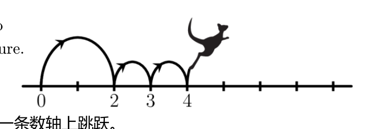

袋鼠按「一大跳再两小跳」从 0 跳到 16。一共跳了多少次？
Kengu makes one large jump then two small jumps, from 0 to 16. How many jumps?

大跳 +2，小跳 +1。可一步步跳，或一键跳到 16，看次数。
Big +2, small +1. Jump step by step or auto to 16 and count.